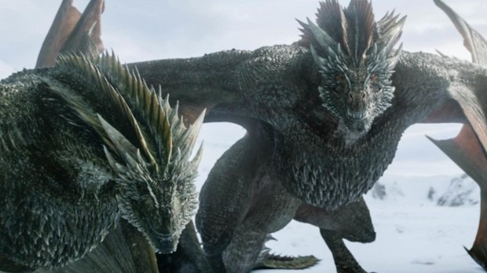
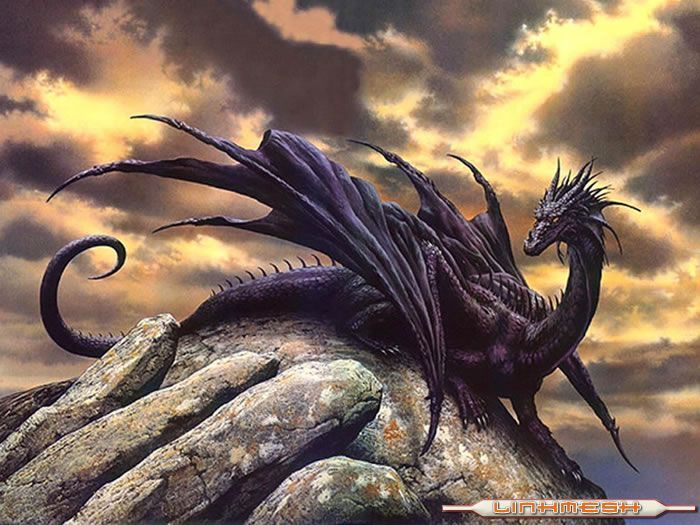
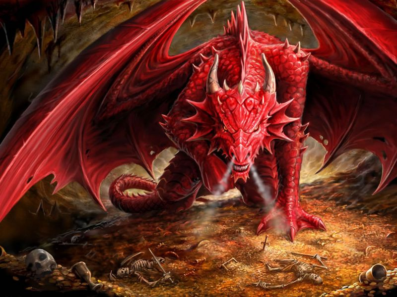
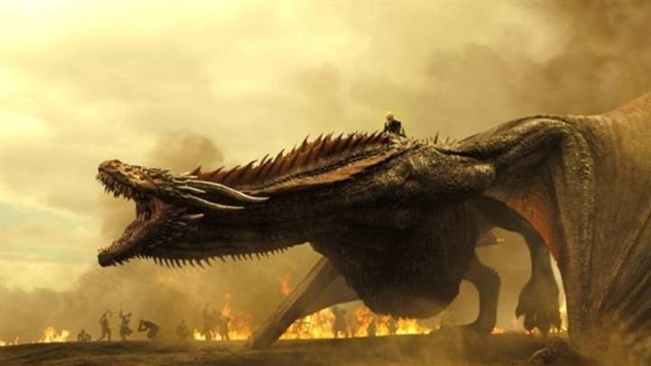
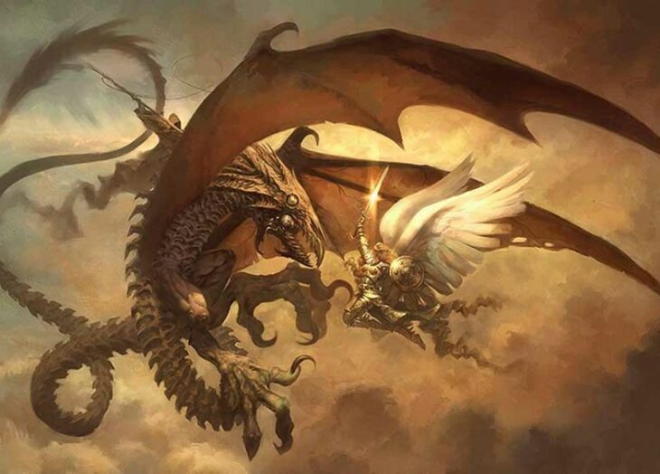

Historia De Dragones

El tiempo y el hechizo de los dragones ha vuelto. ¿Cuál es el origen de los dragones? ¿Por qué su presencia ancestral en culturas tan diferentes del mundo? ¿Cómo es que han sobrevolado los tiempos y tomado fuerza para llegar hasta la cultura popular de hoy? ¿Cuáles son los motivos de su fascinación y misterio en personas de todas las edades y países? ¿Por qué son un reclamo, ahora, en los libros y series de televisión tan exitosas de los últimos años como El Hobbit, El señor de los anillos, Los anillos de poder, Juego de Tronos y La casa del Dragón?
La creación y la destrucción están en ellos. Inteligencia y fuego.
Drákon, del griego, se transformó en Draco, del latín, hasta ser Dragón, en español, y Dragon en muchas lenguas más… Es una de las criaturas más fabulosas y enigmáticas salidas de la mente humana que mezclan en su cuerpo y acción lo terrenal con lo sobrenatural, un cuerpo hecho de diferentes animales que despierta tantos miedos como esperanzas, que desatan tantos simpatizantes como detractores, y de los que más incentivan la imaginación y la fantasía. El dragón es un ser omnipresente en diferentes culturas y épocas que ha sobrevivido a todas las generaciones en la Tierra, hasta tener una gran presencia en estas últimas décadas y vivir un momento de esplendor a través de la literatura que aliada con el cine, la televisión, el mundo virtual y los videojuegos alcanza una potencia y presencia inéditas.
Historias con tramas situadas en épocas medievales, donde la lucha del bien y el mal en lo personal, social, sentimental y político es un tornado incesante. La presencia del dragón, los dragones, son un reclamo indiscutible. Simbolizan el poder y la derrota, la creación y la destrucción, la astucia y la fuerza, el mal y, a veecs, el bien… engendran la duda por saber de qué lado están. Su presencia otorga el carácter épico y legendario que tanto gusta al ser humano, y que a los adultos lo retrotrae al placer y aventuras de épocas fantasiosas. Historias que realmente los traslada a un tiempo y espacio fuera de este mundo, pero que hunde sus garras en él.
En La Mitología Griega

En la mitología de la Grecia clásica es difícil distinguir la serpiente del dragón. Entre las presencias más notables destaca la de la historia del Vellocino de oro (vellón o cuero del carnero alado). Allí se llama Cólquida y es su guardián, una criatura terrorífica, que nunca dormía por custodiar el Vellocino de oro. A él se deben enfrentar Jasón y Medea, quien uso sus hechizos y ungüentos en una rama de enebro para dormirlo; otra versión dice que fue Jasón quien mató al dragón. La adquisición del Vellosino de oro, era crucial para que Jasón obtuviera el trono de Yolco en Tesalia.
Otros dragones de la mitología griega son Ladón, con cien cabezas, que custodiaba el Jardín de las Hespérides, asesinado, según unos por Atlas y otros por Heracles. Se dice que fue destripado y cuando su sangré cayó al jardín de cada gota surgió un árbol drago. El otro dragón es Pitón, una gran serpiente, que vigilaba la caverna donde Temis leía sus oráculos.
En la Biblia Y El Apocalipsis

La última clasificación de los animales según su alimentación se basa en todos aquellos que comen tanto a otros animales como a plantas. Esto les ayuda a ser más flexibles, una característica muy útil, por ejemplo, en animales principalmente carnívoros pero que carecen de opciones momentáneamente.
En efecto, la Edad Media occidental haría del dragón uno de los animales más representados en miniaturas, esculturas y blasones. Se asemeja a una especie de serpiente, con cuatro patas y alas de murciélago, y la mayoría de las veces escupe fuego.
Se dice del dragón que nace del aire pero que se oculta bajo tierra. Se le llama draco y se le equipara, conforme a las Escrituras, con el diablo. El dragón será la bestia favorita a la que se enfrenten numerosos santos y héroes de la Edad Media, como oportunidad de hacer valer su fuerza y su fe en relatos épicos como el de Yvain combatiendo al dragón ayudado de un león, el de san Jorge abatiendo al dragón ante la princesa Trebisonda o incluso la historia tan representada en nuestras iglesias de san Miguel derrotando también al dragón y al mal.
La Mujer Y El Dragón

Luego se vio en el cielo algo muy grande y misterioso: apareció una mujer envuelta en el sol. Tenía la luna debajo de sus pies, y llevaba en la cabeza una corona con doce estrellas. 2 La mujer estaba embarazada y daba gritos de dolor, pues estaba a punto de tener a su hijo.
3 De pronto se vio en el cielo algo también misterioso: apareció un gran dragón rojo, que tenía siete cabezas, diez cuernos y una corona en cada cabeza. 4 Ese dragón arrastró con la cola a la tercera parte de las estrellas del cielo, y las arrojó a la tierra; luego se detuvo frente a la mujer, para comerse a su hijo tan pronto como naciera.
5 La mujer tuvo un hijo que gobernaría con gran poder a todos los países de este mundo. Pero le quitaron a su hijo y lo llevaron ante Dios y ante su trono. 6 La mujer huyó al desierto, donde Dios había preparado un lugar para que la cuidaran durante tres años y medio.
Miguel Y El Dragon

Después hubo una batalla en el cielo. Uno de los jefes de los ángeles, llamado Miguel, acompañado de su ejército, peleó contra el dragón. El dragón y sus ángeles lucharon, 8 pero no pudieron vencer, y ya no se les permitió quedarse más tiempo en el cielo. 9 Arrojaron del cielo al gran dragón, que es la serpiente antigua, es decir, el diablo, llamado Satanás, que se dedica a engañar a todo el mundo. Él y sus ángeles fueron lanzados a la tierra.
10 Entonces oí una fuerte voz que decía:
‘Nuestro Dios
ha salvado a su pueblo;
ha mostrado su poder,
y es el único rey.
Su Mesías gobierna
sobre todo el mundo.
»El diablo ha sido
arrojado del cielo,
pues día y noche,
delante de nuestro Dios,
acusaba a los nuestros.
11 »La muerte del Cordero[c]
y el mensaje anunciado
han sido su derrota.
Los nuestros no tuvieron miedo,
sino que se dispusieron a morir.
12 »¡Que se alegren los cielos,
y todos los que allí viven!
Pero ¡qué mal les va a ir
a los que viven en la tierra,
y a los que habitan en el mar!
»El diablo está muy enojado;
ha bajado para combatirlos.
¡Bien sabe el diablo
que le queda poco tiempo!’
13 Cuando el dragón se dio cuenta de que había sido lanzado a la tierra, empezó a perseguir a la mujer que había tenido a su hijo. 14 Pero Dios le dio a la mujer dos grandes alas de águila para que escapara volando, lejos del dragón, hacia el lugar en el desierto donde la cuidarían durante tres años y medio. 15 El dragón arrojó mucha agua por la boca, y con el agua formó un río para que arrastrara a la mujer. 16 Pero la tierra vino en su ayuda: abrió un hueco y, como si fuera su boca, se tragó toda el agua que el dragón había arrojado. 17 Entonces el dragón se enojó mucho contra la mujer, y fue a pelear contra el resto de sus descendientes, es decir, contra los que obedecen los mandamientos de Dios y siguen confiando en el mensaje de Jesús. 18 Y el dragón se detuvo a la orilla del mar.